import pandas as pd
import matplotlib.pyplot as plt
pd.set_option("display.max_columns", 50)Week 4 hands-on session
Week 4 — Session 2 (Hands‑On): Wrangling with pandas
Note
This notebook covers: - NYC Taxi wrangling pipeline - COVID-19 time series wrangling - Mini-challenge
Setup
1. NYC Taxi Wrangling Pipeline
Download the NYC data from the website: https://www.nyc.gov/site/tlc/about/tlc-trip-record-data.page
We will use yellow taxi data fror January, 2024
!pip install pandas numpy matplotlib seaborn plotly altair geopandasRequirement already satisfied: pandas in /opt/anaconda3/lib/python3.13/site-packages (2.2.3) Requirement already satisfied: numpy in /opt/anaconda3/lib/python3.13/site-packages (2.1.3) Requirement already satisfied: matplotlib in /opt/anaconda3/lib/python3.13/site-packages (3.10.0) Requirement already satisfied: seaborn in /opt/anaconda3/lib/python3.13/site-packages (0.13.2) Requirement already satisfied: plotly in /opt/anaconda3/lib/python3.13/site-packages (5.24.1) Requirement already satisfied: altair in /opt/anaconda3/lib/python3.13/site-packages (5.5.0) Collecting geopandas Using cached geopandas-1.1.1-py3-none-any.whl.metadata (2.3 kB) Requirement already satisfied: python-dateutil>=2.8.2 in /Applications/Positron.app/Contents/Resources/app/extensions/positron-python/python_files/lib/ipykernel/py3 (from pandas) (2.9.0.post0) Requirement already satisfied: pytz>=2020.1 in /opt/anaconda3/lib/python3.13/site-packages (from pandas) (2024.1) Requirement already satisfied: tzdata>=2022.7 in /opt/anaconda3/lib/python3.13/site-packages (from pandas) (2025.2) Requirement already satisfied: contourpy>=1.0.1 in /opt/anaconda3/lib/python3.13/site-packages (from matplotlib) (1.3.1) Requirement already satisfied: cycler>=0.10 in /opt/anaconda3/lib/python3.13/site-packages (from matplotlib) (0.11.0) Requirement already satisfied: fonttools>=4.22.0 in /opt/anaconda3/lib/python3.13/site-packages (from matplotlib) (4.55.3) Requirement already satisfied: kiwisolver>=1.3.1 in /opt/anaconda3/lib/python3.13/site-packages (from matplotlib) (1.4.8) Requirement already satisfied: packaging>=20.0 in /Applications/Positron.app/Contents/Resources/app/extensions/positron-python/python_files/lib/ipykernel/py3 (from matplotlib) (25.0) Requirement already satisfied: pillow>=8 in /opt/anaconda3/lib/python3.13/site-packages (from matplotlib) (11.1.0) Requirement already satisfied: pyparsing>=2.3.1 in /opt/anaconda3/lib/python3.13/site-packages (from matplotlib) (3.2.0) Requirement already satisfied: tenacity>=6.2.0 in /opt/anaconda3/lib/python3.13/site-packages (from plotly) (9.0.0) Requirement already satisfied: jinja2 in /opt/anaconda3/lib/python3.13/site-packages (from altair) (3.1.6) Requirement already satisfied: jsonschema>=3.0 in /opt/anaconda3/lib/python3.13/site-packages (from altair) (4.23.0) Requirement already satisfied: narwhals>=1.14.2 in /opt/anaconda3/lib/python3.13/site-packages (from altair) (1.31.0) Requirement already satisfied: typing-extensions>=4.10.0 in /Applications/Positron.app/Contents/Resources/app/extensions/positron-python/python_files/lib/ipykernel/py3 (from altair) (4.14.1) Collecting pyogrio>=0.7.2 (from geopandas) Using cached pyogrio-0.11.1-cp313-cp313-macosx_12_0_arm64.whl.metadata (5.3 kB) Collecting pyproj>=3.5.0 (from geopandas) Using cached pyproj-3.7.2-cp313-cp313-macosx_14_0_arm64.whl.metadata (31 kB) Collecting shapely>=2.0.0 (from geopandas) Downloading shapely-2.1.2-cp313-cp313-macosx_11_0_arm64.whl.metadata (6.8 kB) Requirement already satisfied: attrs>=22.2.0 in /opt/anaconda3/lib/python3.13/site-packages (from jsonschema>=3.0->altair) (24.3.0) Requirement already satisfied: jsonschema-specifications>=2023.03.6 in /opt/anaconda3/lib/python3.13/site-packages (from jsonschema>=3.0->altair) (2023.7.1) Requirement already satisfied: referencing>=0.28.4 in /opt/anaconda3/lib/python3.13/site-packages (from jsonschema>=3.0->altair) (0.30.2) Requirement already satisfied: rpds-py>=0.7.1 in /opt/anaconda3/lib/python3.13/site-packages (from jsonschema>=3.0->altair) (0.22.3) Requirement already satisfied: certifi in /opt/anaconda3/lib/python3.13/site-packages (from pyogrio>=0.7.2->geopandas) (2025.8.3) Requirement already satisfied: six>=1.5 in /Applications/Positron.app/Contents/Resources/app/extensions/positron-python/python_files/lib/ipykernel/py3 (from python-dateutil>=2.8.2->pandas) (1.17.0) Requirement already satisfied: MarkupSafe>=2.0 in /opt/anaconda3/lib/python3.13/site-packages (from jinja2->altair) (3.0.2) Using cached geopandas-1.1.1-py3-none-any.whl (338 kB) Using cached pyogrio-0.11.1-cp313-cp313-macosx_12_0_arm64.whl (19.4 MB) Using cached pyproj-3.7.2-cp313-cp313-macosx_14_0_arm64.whl (4.6 MB) Downloading shapely-2.1.2-cp313-cp313-macosx_11_0_arm64.whl (1.6 MB) ━━━━━━━━━━━━━━━━━━━━━━━━━━━━━━━━━━━━━━━━ 1.6/1.6 MB 24.3 MB/s eta 0:00:00 Installing collected packages: shapely, pyproj, pyogrio, geopandas ━━━━━━━━━━━━━━━━━━━━━━━━━━━━━━━━━━━━━━━━ 4/4 [geopandas]━ 3/4 [geopandas] Successfully installed geopandas-1.1.1 pyogrio-0.11.1 pyproj-3.7.2 shapely-2.1.2
!pip install pyarrow fastparquetRequirement already satisfied: pyarrow in /opt/anaconda3/lib/python3.13/site-packages (19.0.0) Collecting fastparquet Downloading fastparquet-2024.11.0-cp313-cp313-macosx_11_0_arm64.whl.metadata (4.2 kB) Requirement already satisfied: pandas>=1.5.0 in /opt/anaconda3/lib/python3.13/site-packages (from fastparquet) (2.2.3) Requirement already satisfied: numpy in /opt/anaconda3/lib/python3.13/site-packages (from fastparquet) (2.1.3) Collecting cramjam>=2.3 (from fastparquet) Downloading cramjam-2.11.0-cp313-cp313-macosx_11_0_arm64.whl.metadata (5.6 kB) Requirement already satisfied: fsspec in /opt/anaconda3/lib/python3.13/site-packages (from fastparquet) (2025.3.2) Requirement already satisfied: packaging in /Applications/Positron.app/Contents/Resources/app/extensions/positron-python/python_files/lib/ipykernel/py3 (from fastparquet) (25.0) Requirement already satisfied: python-dateutil>=2.8.2 in /Applications/Positron.app/Contents/Resources/app/extensions/positron-python/python_files/lib/ipykernel/py3 (from pandas>=1.5.0->fastparquet) (2.9.0.post0) Requirement already satisfied: pytz>=2020.1 in /opt/anaconda3/lib/python3.13/site-packages (from pandas>=1.5.0->fastparquet) (2024.1) Requirement already satisfied: tzdata>=2022.7 in /opt/anaconda3/lib/python3.13/site-packages (from pandas>=1.5.0->fastparquet) (2025.2) Requirement already satisfied: six>=1.5 in /Applications/Positron.app/Contents/Resources/app/extensions/positron-python/python_files/lib/ipykernel/py3 (from python-dateutil>=2.8.2->pandas>=1.5.0->fastparquet) (1.17.0) Downloading fastparquet-2024.11.0-cp313-cp313-macosx_11_0_arm64.whl (683 kB) ━━━━━━━━━━━━━━━━━━━━━━━━━━━━━━━━━━━━━━━━ 683.8/683.8 kB 18.7 MB/s eta 0:00:00 Downloading cramjam-2.11.0-cp313-cp313-macosx_11_0_arm64.whl (1.7 MB) ━━━━━━━━━━━━━━━━━━━━━━━━━━━━━━━━━━━━━━━━ 1.7/1.7 MB 25.0 MB/s eta 0:00:00 Installing collected packages: cramjam, fastparquet ━━━━━━━━━━━━━━━━━━━━━━━━━━━━━━━━━━━━━━━━ 2/2 [fastparquet] Successfully installed cramjam-2.11.0 fastparquet-2024.11.0
## Pay attention where you have stored the dataset and change the following path accordingly
taxi = pd.read_parquet("/Users/g48591054/Desktop/Week4_classroom/yellow_tripdata_2024-01.parquet")
print(taxi.shape)
taxi.head()(2964624, 19)| VendorID | tpep_pickup_datetime | tpep_dropoff_datetime | passenger_count | trip_distance | RatecodeID | store_and_fwd_flag | PULocationID | DOLocationID | payment_type | fare_amount | extra | mta_tax | tip_amount | tolls_amount | improvement_surcharge | total_amount | congestion_surcharge | Airport_fee | |
|---|---|---|---|---|---|---|---|---|---|---|---|---|---|---|---|---|---|---|---|
| 0 | 2 | 2024-01-01 00:57:55 | 2024-01-01 01:17:43 | 1.0 | 1.72 | 1.0 | N | 186 | 79 | 2 | 17.7 | 1.0 | 0.5 | 0.00 | 0.0 | 1.0 | 22.70 | 2.5 | 0.0 |
| 1 | 1 | 2024-01-01 00:03:00 | 2024-01-01 00:09:36 | 1.0 | 1.80 | 1.0 | N | 140 | 236 | 1 | 10.0 | 3.5 | 0.5 | 3.75 | 0.0 | 1.0 | 18.75 | 2.5 | 0.0 |
| 2 | 1 | 2024-01-01 00:17:06 | 2024-01-01 00:35:01 | 1.0 | 4.70 | 1.0 | N | 236 | 79 | 1 | 23.3 | 3.5 | 0.5 | 3.00 | 0.0 | 1.0 | 31.30 | 2.5 | 0.0 |
| 3 | 1 | 2024-01-01 00:36:38 | 2024-01-01 00:44:56 | 1.0 | 1.40 | 1.0 | N | 79 | 211 | 1 | 10.0 | 3.5 | 0.5 | 2.00 | 0.0 | 1.0 | 17.00 | 2.5 | 0.0 |
| 4 | 1 | 2024-01-01 00:46:51 | 2024-01-01 00:52:57 | 1.0 | 0.80 | 1.0 | N | 211 | 148 | 1 | 7.9 | 3.5 | 0.5 | 3.20 | 0.0 | 1.0 | 16.10 | 2.5 | 0.0 |
taxi.to_csv("yellow_tripdata_2024-01.tsv", sep= "\t", index=False)taxi = pd.read_csv("yellow_tripdata_2024-01.tsv", sep= "\t", parse_dates=["tpep_pickup_datetime","tpep_dropoff_datetime"])<positron-console-cell-4>:1: DtypeWarning: Columns (6) have mixed types. Specify dtype option on import or set low_memory=False.taxi.columns[6]'store_and_fwd_flag'taxi = pd.read_csv("yellow_tripdata_2024-01.tsv", sep= "\t", parse_dates=["tpep_pickup_datetime","tpep_dropoff_datetime"], dtype={"store_and_fwd_flag": str})print(taxi.shape)
taxi.head()(2964624, 19)| VendorID | tpep_pickup_datetime | tpep_dropoff_datetime | passenger_count | trip_distance | RatecodeID | store_and_fwd_flag | PULocationID | DOLocationID | payment_type | fare_amount | extra | mta_tax | tip_amount | tolls_amount | improvement_surcharge | total_amount | congestion_surcharge | Airport_fee | |
|---|---|---|---|---|---|---|---|---|---|---|---|---|---|---|---|---|---|---|---|
| 0 | 2 | 2024-01-01 00:57:55 | 2024-01-01 01:17:43 | 1.0 | 1.72 | 1.0 | N | 186 | 79 | 2 | 17.7 | 1.0 | 0.5 | 0.00 | 0.0 | 1.0 | 22.70 | 2.5 | 0.0 |
| 1 | 1 | 2024-01-01 00:03:00 | 2024-01-01 00:09:36 | 1.0 | 1.80 | 1.0 | N | 140 | 236 | 1 | 10.0 | 3.5 | 0.5 | 3.75 | 0.0 | 1.0 | 18.75 | 2.5 | 0.0 |
| 2 | 1 | 2024-01-01 00:17:06 | 2024-01-01 00:35:01 | 1.0 | 4.70 | 1.0 | N | 236 | 79 | 1 | 23.3 | 3.5 | 0.5 | 3.00 | 0.0 | 1.0 | 31.30 | 2.5 | 0.0 |
| 3 | 1 | 2024-01-01 00:36:38 | 2024-01-01 00:44:56 | 1.0 | 1.40 | 1.0 | N | 79 | 211 | 1 | 10.0 | 3.5 | 0.5 | 2.00 | 0.0 | 1.0 | 17.00 | 2.5 | 0.0 |
| 4 | 1 | 2024-01-01 00:46:51 | 2024-01-01 00:52:57 | 1.0 | 0.80 | 1.0 | N | 211 | 148 | 1 | 7.9 | 3.5 | 0.5 | 3.20 | 0.0 | 1.0 | 16.10 | 2.5 | 0.0 |
# Clean & feature engineering
taxi_clean = taxi.dropna(subset=["trip_distance"])
taxi_clean = taxi_clean[(taxi_clean.trip_distance.between(2,60)) & (taxi_clean.fare_amount.between(10,250))]
taxi_clean["pickup_hour"] = taxi_clean["tpep_pickup_datetime"].dt.hour
taxi_clean["weekday"] = taxi_clean["tpep_pickup_datetime"].dt.day_name()weekday_order = ["Monday","Tuesday","Wednesday","Thursday","Friday","Saturday","Sunday"]
taxi_clean["weekday"] = pd.Categorical(taxi_clean["weekday"], categories=weekday_order, ordered=True)
taxi_clean.head()| VendorID | tpep_pickup_datetime | tpep_dropoff_datetime | passenger_count | trip_distance | RatecodeID | store_and_fwd_flag | PULocationID | DOLocationID | payment_type | fare_amount | extra | mta_tax | tip_amount | tolls_amount | improvement_surcharge | total_amount | congestion_surcharge | Airport_fee | pickup_hour | weekday | |
|---|---|---|---|---|---|---|---|---|---|---|---|---|---|---|---|---|---|---|---|---|---|
| 2 | 1 | 2024-01-01 00:17:06 | 2024-01-01 00:35:01 | 1.0 | 4.70 | 1.0 | N | 236 | 79 | 1 | 23.3 | 3.5 | 0.5 | 3.0 | 0.0 | 1.0 | 31.30 | 2.5 | 0.00 | 0 | Monday |
| 5 | 1 | 2024-01-01 00:54:08 | 2024-01-01 01:26:31 | 1.0 | 4.70 | 1.0 | N | 148 | 141 | 1 | 29.6 | 3.5 | 0.5 | 6.9 | 0.0 | 1.0 | 41.50 | 2.5 | 0.00 | 0 | Monday |
| 6 | 2 | 2024-01-01 00:49:44 | 2024-01-01 01:15:47 | 2.0 | 10.82 | 1.0 | N | 138 | 181 | 1 | 45.7 | 6.0 | 0.5 | 10.0 | 0.0 | 1.0 | 64.95 | 0.0 | 1.75 | 0 | Monday |
| 7 | 1 | 2024-01-01 00:30:40 | 2024-01-01 00:58:40 | 0.0 | 3.00 | 1.0 | N | 246 | 231 | 2 | 25.4 | 3.5 | 0.5 | 0.0 | 0.0 | 1.0 | 30.40 | 2.5 | 0.00 | 0 | Monday |
| 8 | 2 | 2024-01-01 00:26:01 | 2024-01-01 00:54:12 | 1.0 | 5.44 | 1.0 | N | 161 | 261 | 2 | 31.0 | 1.0 | 0.5 | 0.0 | 0.0 | 1.0 | 36.00 | 2.5 | 0.00 | 0 | Monday |
Seeking additional information, in this case, the Borough in New York City
import geopandas as gpd
import matplotlib.pyplot as plt
gdf = gpd.read_file('taxi_zones/taxi_zones.shp')
fig, ax = plt.subplots(1, 1, figsize=(10, 10))
gdf.plot(ax=ax, color='lightgray', edgecolor='black')
plt.axis('off')
plt.show()
gdf.plot()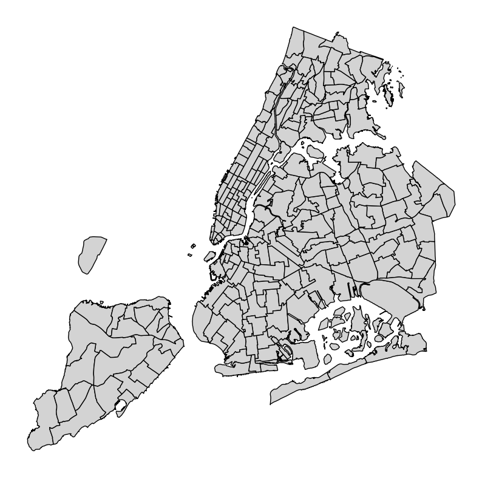
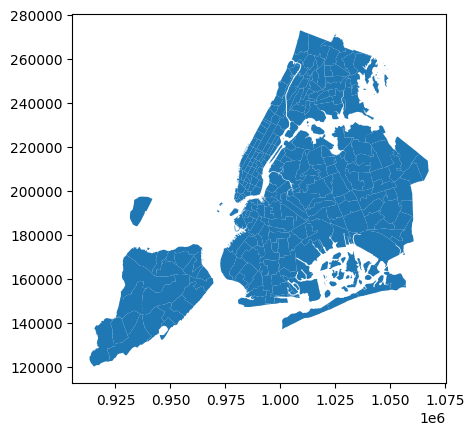
import geopandas as gpd
import matplotlib.pyplot as plt
gdf = gpd.read_file('taxi_zones/taxi_zones.shp')
fig, ax = plt.subplots(1, 1, figsize=(10, 10))
gdf.plot(ax=ax, color='lightgray', edgecolor='black')
# gdf.plot()
# Replace 'label_column' with the name of the column containing your labels
for idx, row in gdf.iterrows():
# Get the centroid of the geometry for label placement
# For Point geometries, use row.geometry.x, row.geometry.y
# For Polygon/LineString geometries, use row.geometry.centroid.x, row.geometry.centroid.y
x, y = row.geometry.centroid.x, row.geometry.centroid.y
# Add the label
ax.annotate(text=row['borough'], xy=(x, y), horizontalalignment='center', fontsize=8, color='darkblue')
plt.axis('off')
plt.show()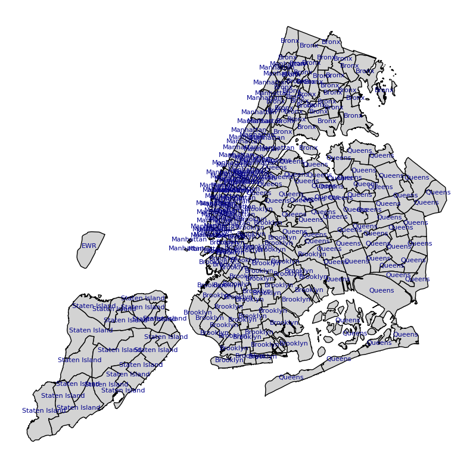
zones = pd.read_csv("taxi_zone_lookup.csv")
zones.head()| LocationID | Borough | Zone | service_zone | |
|---|---|---|---|---|
| 0 | 1 | EWR | Newark Airport | EWR |
| 1 | 2 | Queens | Jamaica Bay | Boro Zone |
| 2 | 3 | Bronx | Allerton/Pelham Gardens | Boro Zone |
| 3 | 4 | Manhattan | Alphabet City | Yellow Zone |
| 4 | 5 | Staten Island | Arden Heights | Boro Zone |
zones['Borough'].unique()array(['EWR', 'Queens', 'Bronx', 'Manhattan', 'Staten Island', 'Brooklyn',
'Unknown', nan], dtype=object)# Join with the borough
with_boro = taxi_clean.merge(zones[["LocationID","Borough"]], left_on="PULocationID", right_on="LocationID", how="left")
with_boro.head()| VendorID | tpep_pickup_datetime | tpep_dropoff_datetime | passenger_count | trip_distance | RatecodeID | store_and_fwd_flag | PULocationID | DOLocationID | payment_type | fare_amount | extra | mta_tax | tip_amount | tolls_amount | improvement_surcharge | total_amount | congestion_surcharge | Airport_fee | pickup_hour | weekday | LocationID | Borough | |
|---|---|---|---|---|---|---|---|---|---|---|---|---|---|---|---|---|---|---|---|---|---|---|---|
| 0 | 1 | 2024-01-01 00:17:06 | 2024-01-01 00:35:01 | 1.0 | 4.70 | 1.0 | N | 236 | 79 | 1 | 23.3 | 3.5 | 0.5 | 3.0 | 0.0 | 1.0 | 31.30 | 2.5 | 0.00 | 0 | Monday | 236 | Manhattan |
| 1 | 1 | 2024-01-01 00:54:08 | 2024-01-01 01:26:31 | 1.0 | 4.70 | 1.0 | N | 148 | 141 | 1 | 29.6 | 3.5 | 0.5 | 6.9 | 0.0 | 1.0 | 41.50 | 2.5 | 0.00 | 0 | Monday | 148 | Manhattan |
| 2 | 2 | 2024-01-01 00:49:44 | 2024-01-01 01:15:47 | 2.0 | 10.82 | 1.0 | N | 138 | 181 | 1 | 45.7 | 6.0 | 0.5 | 10.0 | 0.0 | 1.0 | 64.95 | 0.0 | 1.75 | 0 | Monday | 138 | Queens |
| 3 | 1 | 2024-01-01 00:30:40 | 2024-01-01 00:58:40 | 0.0 | 3.00 | 1.0 | N | 246 | 231 | 2 | 25.4 | 3.5 | 0.5 | 0.0 | 0.0 | 1.0 | 30.40 | 2.5 | 0.00 | 0 | Monday | 246 | Manhattan |
| 4 | 2 | 2024-01-01 00:26:01 | 2024-01-01 00:54:12 | 1.0 | 5.44 | 1.0 | N | 161 | 261 | 2 | 31.0 | 1.0 | 0.5 | 0.0 | 0.0 | 1.0 | 36.00 | 2.5 | 0.00 | 0 | Monday | 161 | Manhattan |
with_boro = taxi_clean.merge(zones[["LocationID","Borough", "Zone"]], left_on="PULocationID", right_on="LocationID", how="left")
with_boro.head()| VendorID | tpep_pickup_datetime | tpep_dropoff_datetime | passenger_count | trip_distance | RatecodeID | store_and_fwd_flag | PULocationID | DOLocationID | payment_type | fare_amount | extra | mta_tax | tip_amount | tolls_amount | improvement_surcharge | total_amount | congestion_surcharge | Airport_fee | pickup_hour | weekday | LocationID | Borough | Zone | |
|---|---|---|---|---|---|---|---|---|---|---|---|---|---|---|---|---|---|---|---|---|---|---|---|---|
| 0 | 1 | 2024-01-01 00:17:06 | 2024-01-01 00:35:01 | 1.0 | 4.70 | 1.0 | N | 236 | 79 | 1 | 23.3 | 3.5 | 0.5 | 3.0 | 0.0 | 1.0 | 31.30 | 2.5 | 0.00 | 0 | Monday | 236 | Manhattan | Upper East Side North |
| 1 | 1 | 2024-01-01 00:54:08 | 2024-01-01 01:26:31 | 1.0 | 4.70 | 1.0 | N | 148 | 141 | 1 | 29.6 | 3.5 | 0.5 | 6.9 | 0.0 | 1.0 | 41.50 | 2.5 | 0.00 | 0 | Monday | 148 | Manhattan | Lower East Side |
| 2 | 2 | 2024-01-01 00:49:44 | 2024-01-01 01:15:47 | 2.0 | 10.82 | 1.0 | N | 138 | 181 | 1 | 45.7 | 6.0 | 0.5 | 10.0 | 0.0 | 1.0 | 64.95 | 0.0 | 1.75 | 0 | Monday | 138 | Queens | LaGuardia Airport |
| 3 | 1 | 2024-01-01 00:30:40 | 2024-01-01 00:58:40 | 0.0 | 3.00 | 1.0 | N | 246 | 231 | 2 | 25.4 | 3.5 | 0.5 | 0.0 | 0.0 | 1.0 | 30.40 | 2.5 | 0.00 | 0 | Monday | 246 | Manhattan | West Chelsea/Hudson Yards |
| 4 | 2 | 2024-01-01 00:26:01 | 2024-01-01 00:54:12 | 1.0 | 5.44 | 1.0 | N | 161 | 261 | 2 | 31.0 | 1.0 | 0.5 | 0.0 | 0.0 | 1.0 | 36.00 | 2.5 | 0.00 | 0 | Monday | 161 | Manhattan | Midtown Center |
filter data based on Borough information
nyc_boroughs = ['Queens', 'Manhattan', 'Brooklyn', 'Bronx']
with_boro = with_boro[with_boro['Borough'].isin(nyc_boroughs)]
print(with_boro.shape)
with_boro.head()
(1220591, 24)| VendorID | tpep_pickup_datetime | tpep_dropoff_datetime | passenger_count | trip_distance | RatecodeID | store_and_fwd_flag | PULocationID | DOLocationID | payment_type | fare_amount | extra | mta_tax | tip_amount | tolls_amount | improvement_surcharge | total_amount | congestion_surcharge | Airport_fee | pickup_hour | weekday | LocationID | Borough | Zone | |
|---|---|---|---|---|---|---|---|---|---|---|---|---|---|---|---|---|---|---|---|---|---|---|---|---|
| 0 | 1 | 2024-01-01 00:17:06 | 2024-01-01 00:35:01 | 1.0 | 4.70 | 1.0 | N | 236 | 79 | 1 | 23.3 | 3.5 | 0.5 | 3.0 | 0.0 | 1.0 | 31.30 | 2.5 | 0.00 | 0 | Monday | 236 | Manhattan | Upper East Side North |
| 1 | 1 | 2024-01-01 00:54:08 | 2024-01-01 01:26:31 | 1.0 | 4.70 | 1.0 | N | 148 | 141 | 1 | 29.6 | 3.5 | 0.5 | 6.9 | 0.0 | 1.0 | 41.50 | 2.5 | 0.00 | 0 | Monday | 148 | Manhattan | Lower East Side |
| 2 | 2 | 2024-01-01 00:49:44 | 2024-01-01 01:15:47 | 2.0 | 10.82 | 1.0 | N | 138 | 181 | 1 | 45.7 | 6.0 | 0.5 | 10.0 | 0.0 | 1.0 | 64.95 | 0.0 | 1.75 | 0 | Monday | 138 | Queens | LaGuardia Airport |
| 3 | 1 | 2024-01-01 00:30:40 | 2024-01-01 00:58:40 | 0.0 | 3.00 | 1.0 | N | 246 | 231 | 2 | 25.4 | 3.5 | 0.5 | 0.0 | 0.0 | 1.0 | 30.40 | 2.5 | 0.00 | 0 | Monday | 246 | Manhattan | West Chelsea/Hudson Yards |
| 4 | 2 | 2024-01-01 00:26:01 | 2024-01-01 00:54:12 | 1.0 | 5.44 | 1.0 | N | 161 | 261 | 2 | 31.0 | 1.0 | 0.5 | 0.0 | 0.0 | 1.0 | 36.00 | 2.5 | 0.00 | 0 | Monday | 161 | Manhattan | Midtown Center |
GroupBy function
# Group & summarize
by_hour = with_boro.groupby("pickup_hour").agg(trips=("trip_distance","count")).reset_index()
by_weekday = with_boro.groupby("weekday").size().rename("trips")
by_hour.head(), by_weekday<positron-console-cell-17>:3: FutureWarning: The default of observed=False is deprecated and will be changed to True in a future version of pandas. Pass observed=False to retain current behavior or observed=True to adopt the future default and silence this warning.( pickup_hour trips
0 0 39664
1 1 25160
2 2 17201
3 3 11860
4 4 9151,
weekday
Monday 177564
Tuesday 184335
Wednesday 199209
Thursday 177140
Friday 166004
Saturday 169894
Sunday 146445
Name: trips, dtype: int64)# Visualize
by_hour.plot(x="pickup_hour", y="trips", kind="bar", title="Trips by Hour")
plt.show()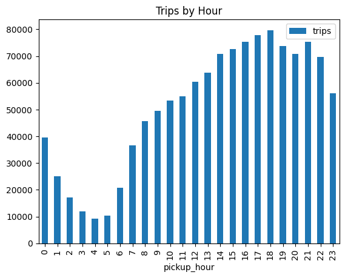
by_weekday.plot(kind="bar", title="Trips by Weekday")
plt.show()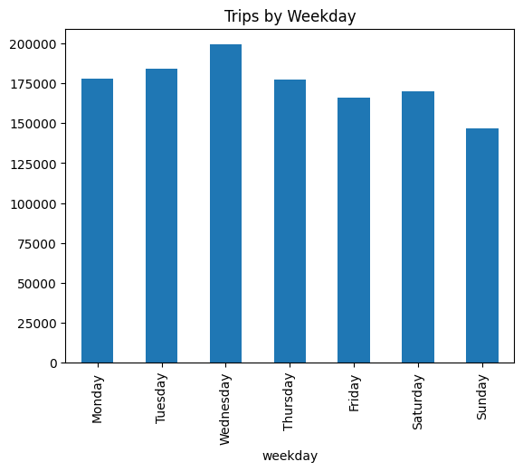
Heatmap of mean trip distance by weekday × hour
pivot_md = with_boro.pivot_table(index="weekday", columns="pickup_hour", values="trip_distance", aggfunc="mean")
plt.imshow(pivot_md.values, aspect="auto")
plt.xticks(range(pivot_md.shape[1]), pivot_md.columns)
plt.yticks(range(pivot_md.shape[0]), pivot_md.index)
plt.colorbar(label="Miles")
plt.title("Mean Trip Distance by Weekday × Hour")
plt.show()<positron-console-cell-20>:1: FutureWarning: The default value of observed=False is deprecated and will change to observed=True in a future version of pandas. Specify observed=False to silence this warning and retain the current behavior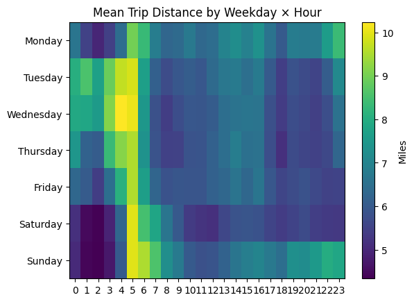
One step further with population
pop = pd.read_csv("nyc_population_2024.csv")
pop.head()| Borough | pop | |
|---|---|---|
| 0 | Bronx | 1468000 |
| 1 | Brooklyn | 2660000 |
| 2 | Manhattan | 1642000 |
| 3 | Queens | 2257000 |
| 4 | Staten Island | 488000 |
with_boro_pop = pd.merge(with_boro, pop, on='Borough', how='left')
with_boro_pop.head()| VendorID | tpep_pickup_datetime | tpep_dropoff_datetime | passenger_count | trip_distance | RatecodeID | store_and_fwd_flag | PULocationID | DOLocationID | payment_type | fare_amount | extra | mta_tax | tip_amount | tolls_amount | improvement_surcharge | total_amount | congestion_surcharge | Airport_fee | pickup_hour | weekday | LocationID | Borough | Zone | pop | |
|---|---|---|---|---|---|---|---|---|---|---|---|---|---|---|---|---|---|---|---|---|---|---|---|---|---|
| 0 | 1 | 2024-01-01 00:17:06 | 2024-01-01 00:35:01 | 1.0 | 4.70 | 1.0 | N | 236 | 79 | 1 | 23.3 | 3.5 | 0.5 | 3.0 | 0.0 | 1.0 | 31.30 | 2.5 | 0.00 | 0 | Monday | 236 | Manhattan | Upper East Side North | 1642000 |
| 1 | 1 | 2024-01-01 00:54:08 | 2024-01-01 01:26:31 | 1.0 | 4.70 | 1.0 | N | 148 | 141 | 1 | 29.6 | 3.5 | 0.5 | 6.9 | 0.0 | 1.0 | 41.50 | 2.5 | 0.00 | 0 | Monday | 148 | Manhattan | Lower East Side | 1642000 |
| 2 | 2 | 2024-01-01 00:49:44 | 2024-01-01 01:15:47 | 2.0 | 10.82 | 1.0 | N | 138 | 181 | 1 | 45.7 | 6.0 | 0.5 | 10.0 | 0.0 | 1.0 | 64.95 | 0.0 | 1.75 | 0 | Monday | 138 | Queens | LaGuardia Airport | 2257000 |
| 3 | 1 | 2024-01-01 00:30:40 | 2024-01-01 00:58:40 | 0.0 | 3.00 | 1.0 | N | 246 | 231 | 2 | 25.4 | 3.5 | 0.5 | 0.0 | 0.0 | 1.0 | 30.40 | 2.5 | 0.00 | 0 | Monday | 246 | Manhattan | West Chelsea/Hudson Yards | 1642000 |
| 4 | 2 | 2024-01-01 00:26:01 | 2024-01-01 00:54:12 | 1.0 | 5.44 | 1.0 | N | 161 | 261 | 2 | 31.0 | 1.0 | 0.5 | 0.0 | 0.0 | 1.0 | 36.00 | 2.5 | 0.00 | 0 | Monday | 161 | Manhattan | Midtown Center | 1642000 |
by_hour = (
with_boro_pop.groupby(["pickup_hour", "Borough"], as_index=False)
.agg({"passenger_count": "sum", "pop": "first"}) # pop is constant per borough
)
# Normalize by borough population
by_hour["passenger_per_capita"] = by_hour["passenger_count"] / by_hour["pop"]
print(by_hour.head()) pickup_hour Borough passenger_count pop passenger_per_capita
0 0 Bronx 18.0 1468000 0.000012
1 0 Brooklyn 294.0 2660000 0.000111
2 0 Manhattan 38288.0 1642000 0.023318
3 0 Queens 11619.0 2257000 0.005148
4 1 Bronx 13.0 1468000 0.000009import seaborn as sns
import matplotlib.pyplot as plt
plt.figure(figsize=(10,6))
sns.lineplot(
data=by_hour,
x="pickup_hour",
y="passenger_per_capita",
hue="Borough",
marker="o"
)
plt.title("Per-Capita Taxi Passengers by Hour and Borough (2024)")
plt.xlabel("Pickup Hour")
plt.ylabel("Passengers per Capita")
plt.xticks(range(0,24))
plt.grid(True, linestyle="--", alpha=0.6)
plt.show()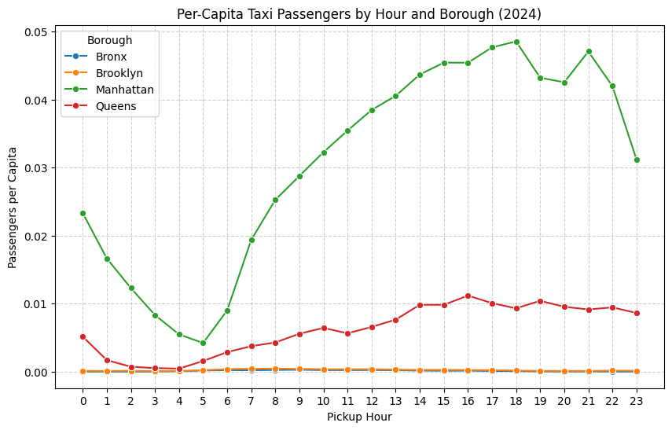
weekday_result = (
with_boro_pop.groupby(["weekday", "Borough"], as_index=False)
.agg({"passenger_count": "sum", "pop": "first"})
)
# Normalize by borough population
weekday_result["passenger_per_capita"] = weekday_result["passenger_count"] / weekday_result["pop"]
print(weekday_result.head()) weekday Borough passenger_count pop passenger_per_capita
0 Monday Bronx 575.0 1468000 0.000392
1 Monday Brooklyn 2459.0 2660000 0.000924
2 Monday Manhattan 166035.0 1642000 0.101118
3 Monday Queens 60921.0 2257000 0.026992
4 Tuesday Bronx 748.0 1468000 0.000510<positron-console-cell-25>:2: FutureWarning: The default of observed=False is deprecated and will be changed to True in a future version of pandas. Pass observed=False to retain current behavior or observed=True to adopt the future default and silence this warning.import seaborn as sns
import matplotlib.pyplot as plt
plt.figure(figsize=(10,6))
sns.barplot(
data=weekday_result,
x="weekday",
y="passenger_per_capita",
hue="Borough"
)
plt.title("Per-Capita Taxi Passengers by Weekday and Borough (2024)")
plt.xlabel("Weekday")
plt.ylabel("Passengers per Capita")
plt.legend(title="Borough")
plt.grid(axis="y", linestyle="--", alpha=0.6)
plt.show()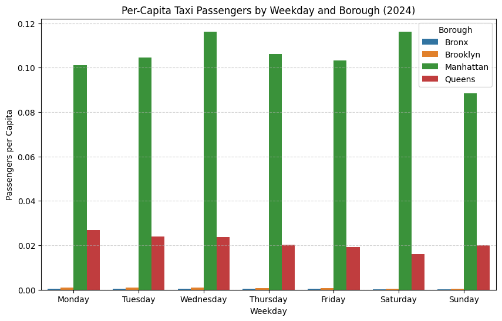
import matplotlib.pyplot as plt
# Pivot so Boroughs become columns
pivot_df = weekday_result.pivot_table(
index="weekday",
columns="Borough",
values="passenger_per_capita",
aggfunc="sum" # in case multiple entries exist
).fillna(0)
# Plot stacked barplot
pivot_df.plot(
kind="bar",
stacked=True,
figsize=(10,6)
)
plt.title("Per-Capita Taxi Passengers by Weekday and Borough (2024)")
plt.xlabel("Weekday")
plt.ylabel("Passengers per Capita")
plt.legend(title="Borough")
plt.grid(axis="y", linestyle="--", alpha=0.6)
plt.tight_layout()
plt.show()<positron-console-cell-27>:4: FutureWarning: The default value of observed=False is deprecated and will change to observed=True in a future version of pandas. Specify observed=False to silence this warning and retain the current behavior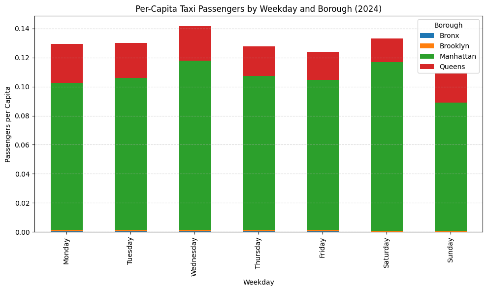
import seaborn as sns
import matplotlib.pyplot as plt
# Ensure weekday order
# order = ["Monday","Tuesday","Wednesday","Thursday","Friday","Saturday","Sunday"]
# weekday_result["weekday"] = pd.Categorical(
# weekday_result["weekday"], categories=order, ordered=True
# )
# Pivot to have boroughs as rows, weekdays as columns
heatmap_data = weekday_result.pivot(index="Borough", columns="weekday", values="passenger_per_capita")plt.figure(figsize=(10,6))
sns.heatmap(
heatmap_data,
annot=True, fmt=".6f", cmap="RdBu", linewidths=0.5, cbar_kws={'label': 'Passengers per Capita'}
)
plt.title("Per-Capita Taxi Passengers by Weekday and Borough (2024)")
plt.xlabel("Weekday")
plt.ylabel("Borough")
plt.show()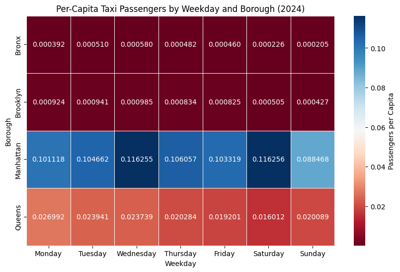
# Pivot to create heatmap table
heatmap_hourly = by_hour.pivot(
index="Borough",
columns="pickup_hour",
values="passenger_per_capita"
)import seaborn as sns
import matplotlib.pyplot as plt
plt.figure(figsize=(14,6))
sns.heatmap(
heatmap_hourly,
annot=False, cmap="coolwarm", linewidths=0.5, cbar_kws={'label': 'Passengers per Capita'}
)
plt.title("Per-Capita Taxi Passengers by Hour and Borough (2024)")
plt.xlabel("Pickup Hour")
plt.ylabel("Borough")
plt.xticks(rotation=0)
plt.show()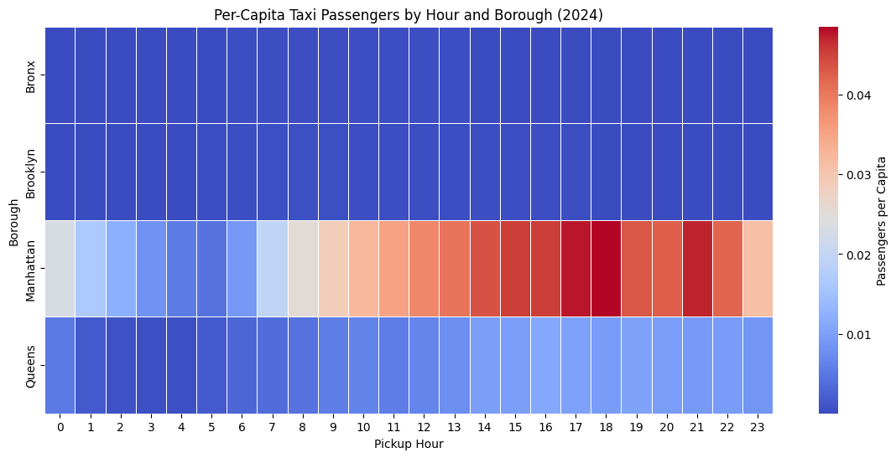
Color palettes: Seaborn: https://seaborn.pydata.org/tutorial/color_palettes.html
matlibplot: https://matplotlib.org/stable/users/explain/colors/colormaps.html
2. COVID‑19 Time Series Wrangling
covid = pd.read_csv("covid_daily.csv", parse_dates=["date"])
ny = covid[covid.state=="NY"].set_index("date").sort_index()
ny["new_cases"] = ny["cases"].diff()
weekly = ny["new_cases"].resample("W-SUN").sum()
rolling = ny["new_cases"].rolling(7, min_periods=1).mean()
weekly.plot(title="NY New Cases Weekly Sum")
plt.show()
rolling.plot(title="NY New Cases 7-day Rolling Mean")
plt.show()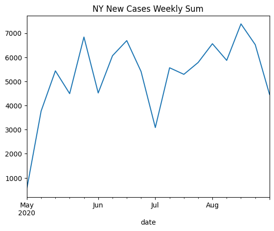
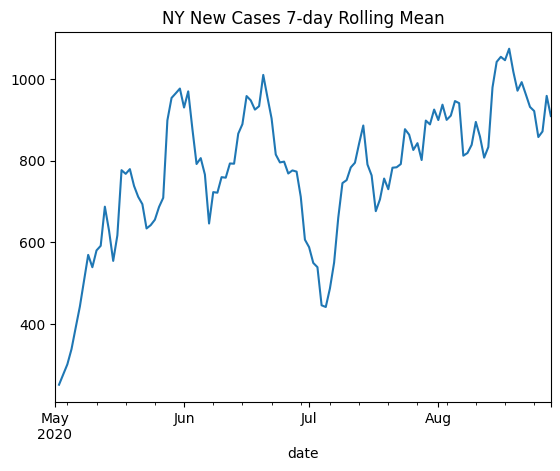
import pandas as pd
import seaborn as sns
import matplotlib.pyplot as plt
# --- 1) Load and filter NY data ---
covid = pd.read_csv("covid_daily.csv", parse_dates=["date"])
ny = (covid[covid["state"] == "NY"]
.set_index("date")
.sort_index())
# Daily new cases from cumulative
ny["new_cases"] = ny["cases"].diff()
# --- 2) Compute weekly sum ---
weekly = ny["new_cases"].resample("W-SUN").sum().reset_index()
weekly.columns = ["date", "weekly_cases"]
# --- 3) Compute 7-day rolling mean ---
rolling = ny["new_cases"].rolling(7, min_periods=1).mean().reset_index()
rolling.columns = ["date", "rolling_mean"]
# --- 4) Plot weekly sum ---
plt.figure(figsize=(12,6))
sns.lineplot(data=weekly, x="date", y="weekly_cases", marker="o", color="steelblue")
plt.title("NY New COVID-19 Cases: Weekly Sum")
plt.xlabel("Date")
plt.ylabel("Weekly New Cases")
plt.xticks(rotation=45)
plt.tight_layout()
plt.show()
# --- 5) Plot rolling mean ---
plt.figure(figsize=(12,6))
sns.lineplot(data=rolling, x="date", y="rolling_mean", color="darkorange")
plt.title("NY New COVID-19 Cases: 7-day Rolling Mean")
plt.xlabel("Date")
plt.ylabel("Daily New Cases (7-day avg)")
plt.xticks(rotation=45)
plt.tight_layout()
plt.show()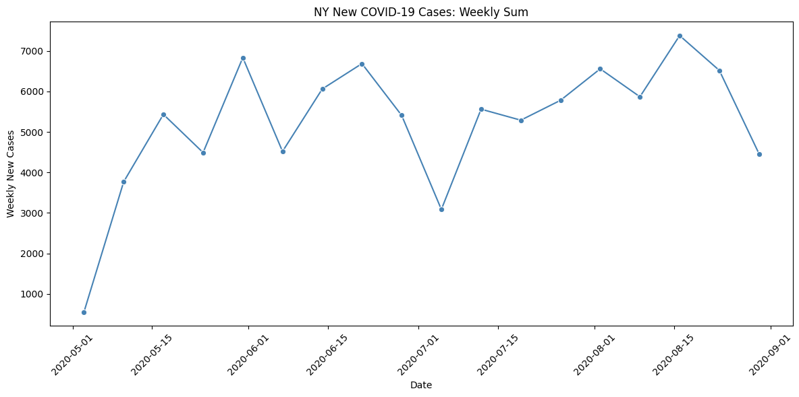
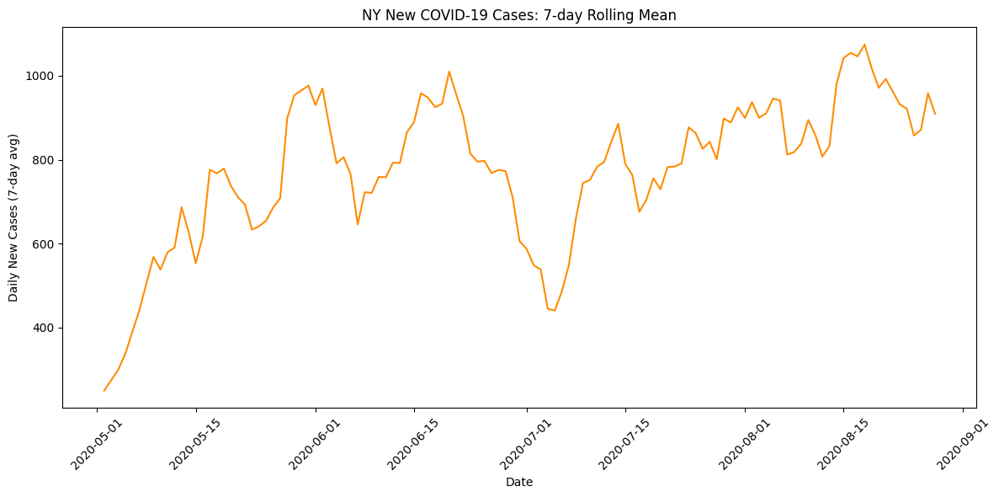
3. Mini‑Challenge
# Mean fare by borough × hour
mean_fare = with_boro.groupby(["Borough","pickup_hour"])["fare_amount"].mean().reset_index()
pivot_fare = mean_fare.pivot(index="Borough", columns="pickup_hour", values="fare_amount")
plt.imshow(pivot_fare.values, aspect="auto")
plt.xticks(range(pivot_fare.shape[1]), pivot_fare.columns)
plt.yticks(range(pivot_fare.shape[0]), pivot_fare.index)
plt.colorbar(label="$")
plt.title("Mean Fare by Borough × Hour")
plt.show()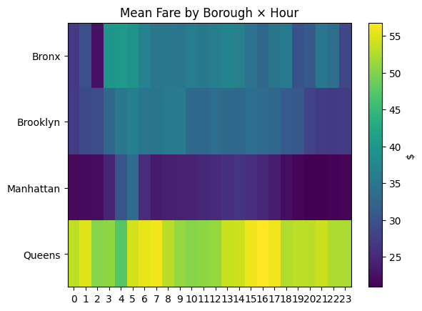
# Bonus: trips by passenger count
by_passengers = with_boro.groupby("passenger_count").size().rename("trips").sort_values(ascending=False)
by_passengers.plot(kind="bar", title="Trips by Passenger Count")
plt.show()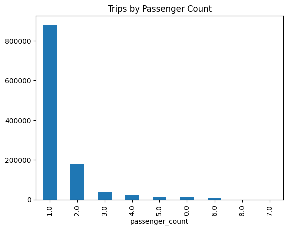
## if you want to correctly display interactive graphs using Plotly, add the following lines for the visualization
import plotly.io as pio
pio.renderers.default = 'plotly_mimetype+notebook_connected'import plotly.express as px
df = px.data.iris()
fig = px.scatter(df, x="sepal_width", y="sepal_length", color="species", marginal_y="violin",
marginal_x="box", trendline="ols", template="simple_white")
fig.show()